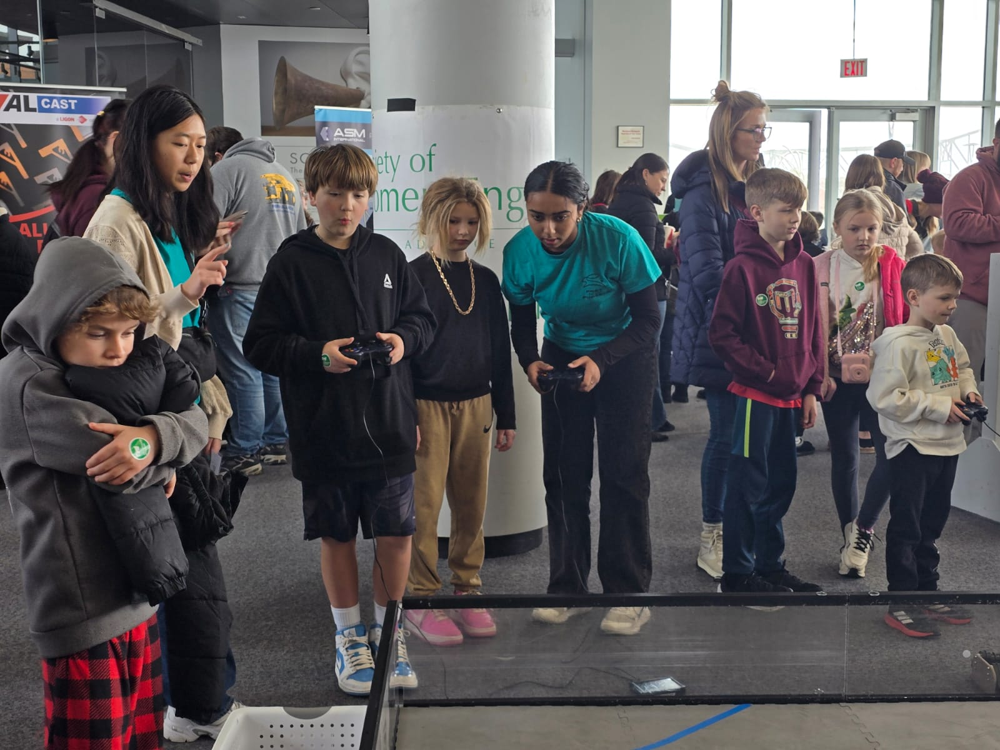

Engineering Day
 | Feb 16, 2025
| Feb 16, 2025
On February 16, 2025, our team had the chance to participate in Engineering Day at the Peoria Riverfront Museum. The annual event brings together
engineering companies, local organizations, and student groups to showcase what they’re working on and to inspire kids and families to explore STEM.
As one of the demonstrators, Team F.B.N.F. was proud to bring our FTC robot to the floor, letting visitors take control, ask questions, and learn firsthand what FIRST robotics is all about.
